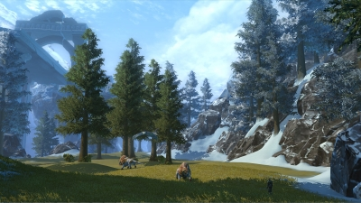
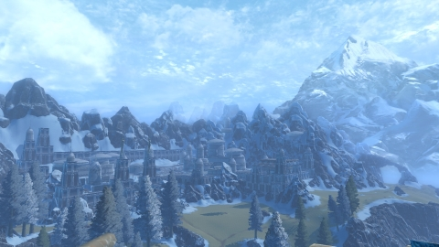

Colonization
{kind=link}
The first steps in the colization of New Hope would be for volunteers to go and set up bases in different strategically chosen locations. These volunteers will be accompanied by a collective military, comprised of personnel from many participating governments located around Earth. The military will be there to protect the volunteers from the dangers of the new planets and to uphold law and order in these new settlements. Civilians that make up all parts of society will be chosen to based on their unique skill sets to colonize this new planet. Once these settlements are up and running, more civilians will be allowed to go to help bolster population and grow the population of this new planet.
Government
{kind=link}
New Hope will have a Socialist government where everyone that pulls their weight is equal. There will be checks and balances on the government to ensure a dictatorship can not occur. This will allow for life on this new planet to be completely controlled and monitored. This one single government will control the whole planet from the onset to minimalize the risk of war. All citizens will have equal working conditions and earn the same wages. The death penalty will be punishment for all crimes committed by anyone over age 18. For crimes commmitted by those under age 18, said criminals will be placed into a juvenile detention system until they turn 18. Violation of the law while in juvenile detention will result in the death penalty.
Mineral Wealth
New Hope is home to an enormous abundance of minerals and natural resources. In order to keep this new home thriving, studies will be done to make sure that these resources will only be extracted if doing so will create no harm to the environment. These resources can be used for either life on New Hope or exported back to Earth.
Clean and Renewable Energy
Only clean energy is allowed on New Hope. Absolutely zero pollutants will be tolerated. It is the goal of New Hope to learn from our terrible lessons back on Earth, and make this truly a great place for human civilzation for the rest of eternity. New hope will not allow humans to destroy another planet.